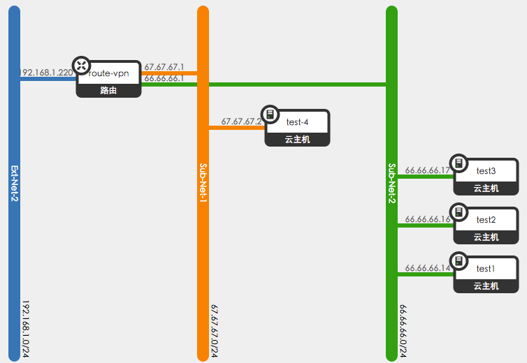

虚拟机之间的通信，虚拟机与外网的通信，物理网卡如何参与，本文记录一个关于虚拟机数据流向的实验结果。
实验工具: iftop(或者tcp-dump也可)
实验环境:
22.22.22.107 compute-node-a1
22.22.22.109 compute-node-a2
22.22.22.108 network-node
虚拟网络拓扑:
test1 66.66.66.14 in compute-node-a1
test2 66.66.66.16 in compute-node-a2
test3 66.66.66.17 in compute-node-a2
test4 67.67.67.2 in compute-node-a2
不同的虚拟子网之间通信，一定要走network-node，因为涉及到跨网段，所以需要network-node中的router-namespace进行转发。
外网通信，则需要通过Hypervisor与network-node的隧道相连，然后通过绑定在网桥br-ex上的物理网卡，与外界通信。